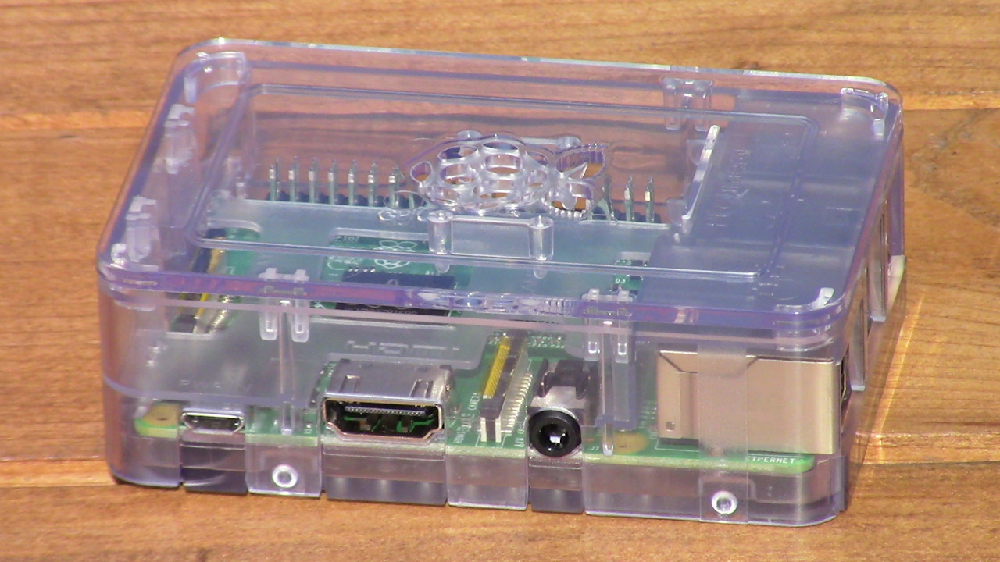

Raspberry Pi Home Sever

In order to learn back-end web development without paying for server time, I have decided to turn a Raspberry Pi into a miniature home web server.
I am starting this project in late 2020, and as I move forward, I will document most of the important skills that I learn. If you are viewing this page in the future, there should be a reasonable list of articles below.